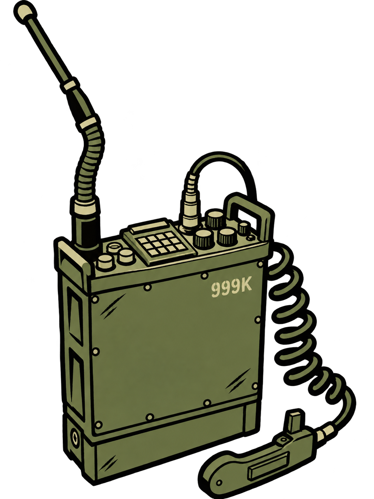

P-999K
Each agent works in its own app. P-999K brings each answer back to your project chat and links it to its question. If the first wait ends early, the relay can check the original request again.
Use an Apple Silicon Mac with Orca 1.4.268 or later. P-999K is experimental. The registrar can revoke hosted tunnel addresses on a five-day schedule. Your queue stays on your Mac. For a stable address, use the same hub with your own HTTPS domain.
You can ask more than one connected peer from that chat. Apps differ in how they notice new work. Some check on their own. Others move after a prompt or notice in the app.
Build 999k from main to try the experimental Agent-to-Agent adapter. Use one A2A 1.0 JSON-RPC endpoint that can return a final text answer from one request. Handle any follow-up input or sign-in at the agent.